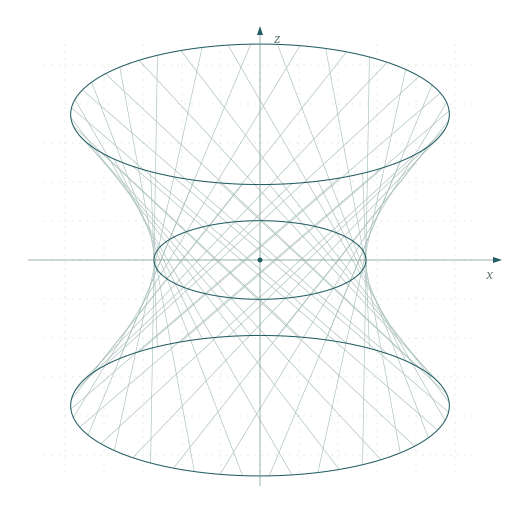

Recursive self-improvement
I explore how an AI system might improve the processes it uses to learn, solve problems, and make further improvements.
MATHEMATICS × COMPUTER SCIENCE
Recursive self-improvement.
A mathematical perspective.
I’m an undergraduate in Mathematics and Applied Mathematics at DIICSU, Central South University, with a minor in Computer Science. My current interests center on recursive self-improvement (RSI): how AI systems might improve their own learning and problem-solving processes, and how to evaluate that progress.

01 / RESEARCH
I’m interested in the mechanisms, evaluation, and limits of self-improving AI systems.
I explore how an AI system might improve the processes it uses to learn, solve problems, and make further improvements.
I’m interested in how to measure progress across successive iterations, detect regressions, and assess what independent checks can establish.
My broader interests include uncertainty, distribution shift, and the stability of adaptation, studied through mathematical analysis and reproducible experiments.
02 / OPEN SOURCE
Tools and reproducible experiments at the intersection of mathematics, research, and software.
A reproducible benchmark for structure detection in finite sequences, combining minimum description length scoring, Monte Carlo calibration, and held-out evaluation.
Benchmark · ReproducibilityA CLI that compares package metadata with release archives across npm, Python, and Rust, then produces structured findings and scoped maintenance tasks.
CLI · Release toolingA Codex skill for evidence-grounded manuscript revision, combining claim–evidence mapping, static preservation checks, and semantic review.
Academic writing · Evidence auditing03 / BACKGROUND
2025 — PRESENT
Dundee International Institute
of Central South University (DIICSU)
Mathematics and Applied Mathematics
Minor in Computer Science
04 / GET IN TOUCH
For research discussions, collaboration, and internship opportunities.